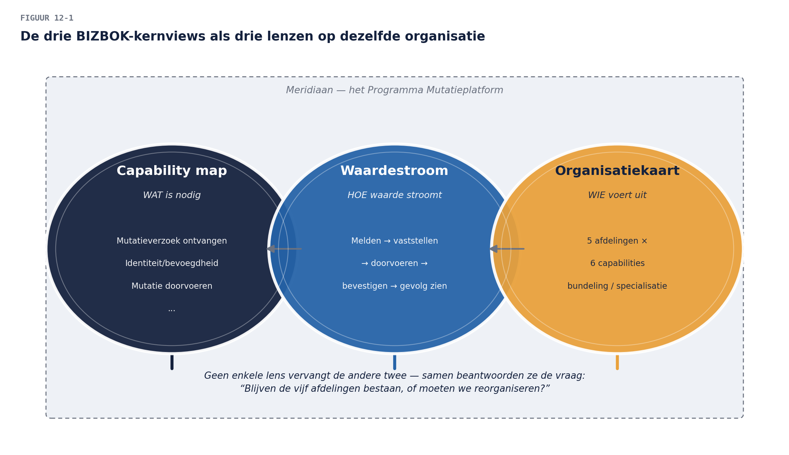
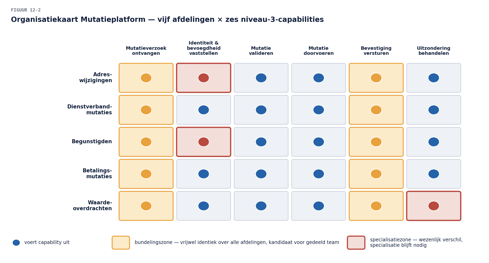

Business & Enterprise Architectuur — Niveau 2
Deel 12 · Reader — Businessarchitectuur volgens BIZBOK: capabilities, waardestromen, organisatie
Positionering. Dit is uw eerste zwaartepuntdeel (naast deel 25 in niveau 3): een volledige dag gewijd aan de businessarchitectuur-discipline zelf, los van de ADM-cyclus die de rest van niveau 2 draagt. De stof is BIZBOK®-materiaal (Business Architecture Guild); zij is geen TOGAF-examenstof maar bouwt het vakmanschap dat TOGAF-fase B in niveau 1 (deel 4) alleen kon aanstippen. Wie de Open CA-specialisatie Business Architect (niveau 3) overweegt, vindt hier het fundament.
Leerdoelen
Na dit deel kun je:
- de drie kernviews van BIZBOK onderscheiden en in samenhang gebruiken: capability map, waardestroom, organisatiekaart;
- een capability map naar drie niveaus diep uitwerken en cross-mappen naar strategie, waardestromen en organisatie;
- een waardestroom volledig uitwerken: stakeholder, trigger, stages, geleverde waarde, en de koppeling naar capabilities;
- een organisatiekaart opstellen die bewust losstaat van het organogram;
- de drie views gebruiken om één businessvraag vanuit drie complementaire invalshoeken te beantwoorden;
- het verschil articuleren tussen businessarchitectuur als TOGAF-fase (deel 4, niveau 1) en businessarchitectuur als zelfstandige discipline (vandaag).
1. Casus: de vraag die drie antwoorden nodig heeft
Terug bij het Programma Mutatieplatform. De programmastuurgroep stelt een vraag die deel 11 niet volledig kon beantwoorden: “Als we straks één generieke mutatieverwerkingscapability hebben — wat betekent dat voor onze organisatie? Blijven de vijf afdelingen bestaan? Moeten we reorganiseren?”
Dit is een vraag die geen enkele view alleen kan beantwoorden. De capability map zegt wát er nodig is; zij zegt niets over wie het uitvoert. De waardestroom zegt hoe waarde naar de deelnemer of werkgever stroomt; zij zegt niets over de interne organisatiestructuur. Pas de organisatiekaart — vandaag geïntroduceerd — legt capabilities naast organisatie-eenheden en maakt zichtbaar waar een reorganisatie wél en niet nodig is. Dit deel bouwt alle drie views, in samenhang, om precies deze vraag te beantwoorden.

2. BIZBOK naast TOGAF: twee vertrekpunten, één doel
Niveau 1 (deel 1, §2.4 en deel 4, §7) introduceerde het onderscheid al: TOGAF benadert businessarchitectuur vanuit de veranderopgave (wat moet er voor déze cyclus beschreven worden), BIZBOK vanuit de blijvende beschrijving (de businessarchitectuur van de onderneming, los van enige specifieke verandering). Vandaag werkt u vanuit het BIZBOK-vertrekpunt: niet “wat heeft het Mutatieplatform nodig”, maar “hoe ziet de businessarchitectuur van Meridiaan eruit, waar het Mutatieplatform toevallig doorheen snijdt.”
Dat verschil in vertrekpunt heeft een praktische consequentie: een BIZBOK-artefact dat vandaag wordt gebouwd, overleeft het Mutatieplatform. De capability map die u vandaag verdiept, is dezelfde kaart die in niveau 1 (deel 4) voor het werkgeversdossier werd gebruikt — uitgebreid, niet vervangen. Dit is precies de Enterprise Continuum-gedachte (niveau 1, deel 2, §6) in de praktijk: van organisatiespecifiek naar generiek, en vice versa, hergebruikt over cycli en programma’s heen.
3. De capability map, drie niveaus diep
3.1 Herhaling en verdieping
Niveau 1 (deel 4, §2) introduceerde de capability map op twee niveaus voor het werkgeversdomein. BIZBOK werkt structureel naar drie niveaus: niveau 1 (de grofste indeling — richtinggevend, kern, ondersteunend, zoals in niveau 1 gezien), niveau 2 (de indeling per kerngebied, zoals “Werkgeversdiensten” → “Onboarding”, “Gegevensaanlevering”, …), en niveau 3 — vandaag nieuw: de fijnste, nog steeds vermogens-taal, indeling die direct koppelbaar is aan concrete processen en systemen.
Voor de generieke mutatieverwerkingscapability (deel 11) uitgewerkt naar niveau 3: “Mutatieverzoek ontvangen”, “Identiteit en bevoegdheid vaststellen”, “Mutatie valideren”, “Mutatie doorvoeren”, “Bevestiging versturen”, “Uitzondering behandelen”. Elk van deze is nog steeds een vermogen (geen procesvolgorde, geen systeemwens), maar concreet genoeg om er een applicatie, een eigenaar en een SLA aan op te hangen.
3.2 Cross-mapping: de kaart wordt bruikbaar
Een capability map op zichzelf is een encyclopedie. Zij wordt gereedschap door cross-mapping — haar koppelen aan andere views:
- Capability × strategie: welke strategische doelstelling steunt op welke capability? Voor Meridiaan: de doelstelling “kostenreductie uitvoering” steunt zwaar op “Mutatie doorvoeren” (automatisering) en “Uitzondering behandelen” (het duurste deel per transactie). Deze cross-mapping stuurt investeringsprioriteit rechtstreeks vanuit de strategie — sterker dan de heat mapping uit niveau 1 (die op prestatie kleurde, niet op strategische zwaarte).
- Capability × waardestroom: welke fase van een waardestroom steunt op welke capability (§4) — de matrix die u in niveau 1 al bouwde (deel 4, §4), hier herbevestigd als BIZBOK-kerntechniek.
- Capability × organisatie: welke organisatie-eenheid voert welke capability uit (§5) — het instrument dat de stuurgroepvraag uit §1 beantwoordt.
- Capability × applicatie: de matrix uit niveau 1, deel 6 — ongewijzigd bruikbaar.
De regel achter alle cross-mapping. Een capability mag door meerdere organisatie-eenheden gedeeld worden en één organisatie-eenheid mag meerdere capabilities dragen — de relatie is many-to-many, nooit een simpele boom. Wie een capability map als organogram tekent (één tak per afdeling), heeft de kaart in een verkeerde vorm gedwongen. Dit is dezelfde les als “capability ≠ afdeling” uit niveau 1, deel 4, §3 — hier de reden waaróm cross-mapping als aparte matrix bestaat in plaats van als boomstructuur.
4. De waardestroom, volledig uitgewerkt
4.1 De volledige BIZBOK-vorm
Niveau 1 (deel 4, §4) introduceerde de waardestroom op hoofdlijnen. BIZBOK schrijft een vollediger vorm voor, met vier vaste onderdelen:
- Stakeholder: wie initieert de waardestroom en wie ontvangt de waarde — vaak, maar niet altijd, dezelfde persoon. Voor “Mutatie doorvoeren voor een deelnemer”: de deelnemer initieert (een verhuizing, een scheiding), en ontvangt ook de waarde (correcte administratie), maar de trigger kan ook van een derde komen (een werkgever die een dienstverbandwijziging doorgeeft).
- Trigger: de gebeurtenis die de stroom start — expliciet benoemd, niet impliciet verondersteld.
- Stages: de fasen van trigger tot waarde, elk met een eigen tussenwaarde (niveau 1, deel 4, §4 herhaald).
- Value item: de waarde die uiteindelijk geleverd wordt, in de taal van de stakeholder, niet in de taal van de organisatie (“mijn pensioenadministratie klopt weer”, niet “mutatie verwerkt”).
4.2 De generieke mutatiewaardestroom
Voor het Mutatieplatform, uitgewerkt volgens deze vorm:
“Mijn gegevens laten kloppen” — stakeholder: de deelnemer of werkgever wiens situatie wijzigt · trigger: een life event of bedrijfsgebeurtenis (verhuizing, scheiding, fusie, overlijden van een begunstigde) · stages: situatie melden (trigger wordt kenbaar) → identiteit en bevoegdheid bevestigen → wijziging doorvoeren (met domeinspecifieke validatie) → bevestiging ontvangen → vervolgeffecten zien (een gewijzigde premienota, een aangepast pensioenoverzicht) · value item: “mijn administratie bij Meridiaan klopt, zonder dat ik daar zelf achteraan hoefde.”
Vergelijk deze stroom met de generieke capability uit deel 11 (§3): de stages corresponderen bijna één-op-één met de capability-niveau-3-elementen uit §3.1 — dat is geen toeval maar het bewijs dat de generieke laag goed ontworpen is. Een capability map en een waardestroom die niet op elkaar aansluiten, wijzen op een denkfout in minstens één van beide (zie ook de consistentie-les uit niveau 1, deel 4, §3).
4.3 De vijfde stage: vervolgeffecten
Let op de stage “vervolgeffecten zien” — een toevoeging ten opzichte van niveau 1’s vieretappen-stroom. BIZBOK dwingt architecten door te denken tot ná de transactie: de stakeholder ervaart waarde pas volledig als de gevolgen van de mutatie zichtbaar zijn geworden (de premienota is aangepast, het pensioenoverzicht klopt). Voor het Mutatieplatform is dit een cruciale ontwerpeis: een mutatie die “verwerkt” is maar wiens gevolgen pas na drie maanden zichtbaar worden in andere systemen, levert in BIZBOK-termen nog geen volledige waarde — ook al is de capability “Mutatie doorvoeren” technisch gezien voltooid. Dit scherpt de doorleveringseis uit niveau 1 (de 24-uurs-signaalregel, deel 5) aan tot een principiële eis: waarde is pas geleverd als de stakeholder het vervolgeffect kan zien, niet wanneer de organisatie de transactie als “klaar” boekt.
5. De organisatiekaart: het antwoord op de stuurgroepvraag
5.1 Waarom geen organogram
Een organogram toont hiërarchie en rapportagelijnen — waardevol voor HR-doeleinden, maar architectonisch een valse vriend: het beantwoordt niet “wie doet wat” in capability-termen, en het verleidt tot het al genoemde fout-denken (capability = afdeling). De organisatiekaart in BIZBOK-zin toont iets anders: organisatie-eenheden (afdelingen, teams, of zelfs externe partijen zoals administratiekantoren) gekoppeld aan de capabilities die zij daadwerkelijk uitvoeren — ongeacht waar zij in de hiërarchie hangen.
5.2 De organisatiekaart voor het Mutatieplatform
Vandaag de vraag van de stuurgroep beantwoord: leg de vijf huidige mutatie-afdelingen naast de niveau-3-capabilities uit §3.1. Het resultaat (samengevat): “Mutatieverzoek ontvangen” en “Bevestiging versturen” blijken al bijna identiek te worden uitgevoerd door alle vijf afdelingen (kandidaat voor één gedeeld team of gedeelde dienst); “Identiteit en bevoegdheid vaststellen” verschilt wezenlijk tussen Begunstigden (streng) en Adreswijzigingen (licht) — hier blijft specialisatie nodig, ook organisatorisch; “Uitzondering behandelen” vraagt bij Waardeoverdrachten juridische specialisatie die niet overdraagbaar is naar de andere vier.
Het antwoord op de stuurgroepvraag wordt daarmee genuanceerd en verdedigbaar in plaats van een simpel ja/nee: gedeeltelijke organisatorische bundeling (intake en bevestiging gezamenlijk), behouden specialisatie waar het vermogen het vereist (autorisatie, juridische toetsing). Dit is precies het soort antwoord dat een capability map alléén niet had kunnen geven — de organisatiekaart maakt het architectuuradvies concreet op het niveau waar de stuurgroep het nodig heeft: mensen en teams, niet alleen systemen.

6. De drie views in samenhang: één vraag, drie lenzen
Terug naar de stuurgroepvraag uit §1, nu met alle drie views paraat:
- Capability map zegt: dit is wat nodig is, drie niveaus diep, met de cross-mapping naar strategie die toont waar de investeringsprioriteit ligt.
- Waardestroom zegt: dit is hoe de deelnemer of werkgever de verandering ervaart, inclusief het vervolgeffect dat vaak wordt vergeten.
- Organisatiekaart zegt: dit is wie het uitvoert, en waar bundeling wel en niet verstandig is.
Geen van de drie vervangt de andere twee; een advies dat op maar één view steunt, is per definitie onvolledig — precies zoals een view zonder viewpoint in ArchiMate (niveau 1, deel 8) een onvolledig beeld geeft. Voor het Practitioner-niveau en voor de Open CA-voorbereiding (niveau 3) is dit de kernvaardigheid: niet één techniek toepassen, maar weten wélke combinatie van views een gegeven vraag beantwoordt.
7. Samenvatting
- BIZBOK vertrekt vanuit de blijvende beschrijving van de onderneming, niet vanuit één veranderopgave; artefacten overleven het programma dat ze aanleiding gaf.
- De capability map werkt drie niveaus diep en wordt pas bruikbaar door cross-mapping naar strategie, waardestroom, organisatie en applicaties — nooit als boomstructuur (many-to-many).
- De volledige waardestroomvorm heeft vier onderdelen: stakeholder, trigger, stages, value item — met een vijfde stage (vervolgeffecten) die waarde pas als compleet erkent wanneer de stakeholder de gevolgen ziet.
- De organisatiekaart koppelt organisatie-eenheden aan capabilities, los van het organogram, en beantwoordt reorganisatievragen genuanceerd: bundelen waar het kan, specialiseren waar het moet.
- Eén businessvraag vraagt vaak om alle drie views tegelijk; geen enkele view is op zichzelf voldoende.
Begrippenlijst
| Begrip | Omschrijving |
|---|---|
| Cross-mapping | een capability map koppelen aan strategie, waardestroom, organisatie of applicaties |
| Value item | de waarde die een waardestroom uiteindelijk levert, in stakeholdertaal |
| Vervolgeffect-stage | de waardestroomfase waarin de stakeholder de gevolgen van de verandering ziet |
| Organisatiekaart | capabilities gekoppeld aan uitvoerende eenheden, los van het organogram |
Verder lezen
- Business Architecture Guild, BIZBOK® Guide — Capability Mapping, Value Mapping, Organization Mapping (kernstof van dit deel)
Volgende deel: ArchiMate gevorderd I — alle lagen, en de motivatie- en strategielaag die vandaag impliciet al meeklonk (capability, strategie) krijgt hier zijn formele elementen.